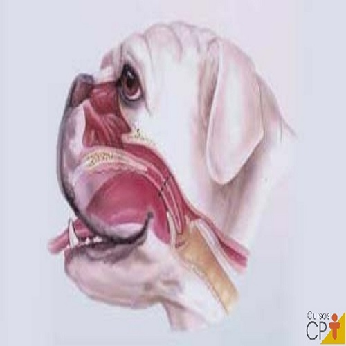
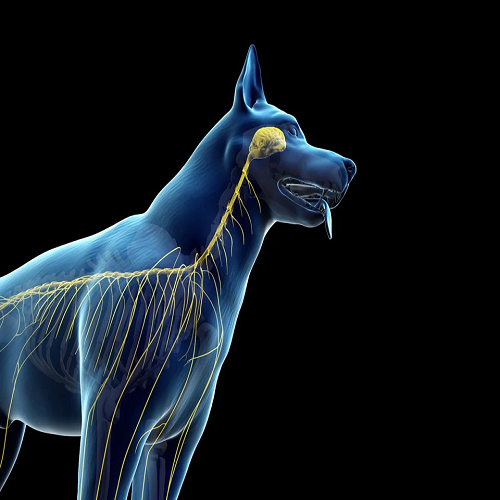
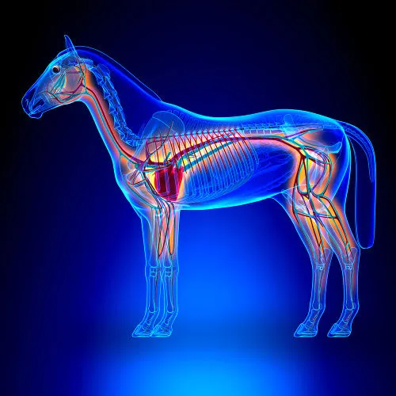
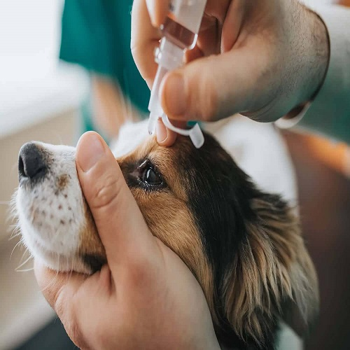
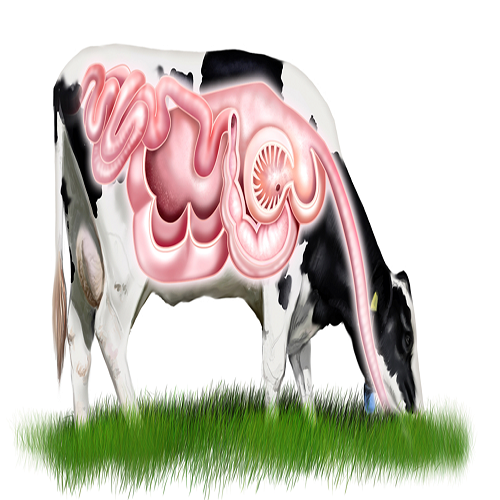

O projeto EcoPet surge como uma iniciativa dedicada a conscientizar sobre os impactos devastadores das queimadas nos animais domésticos. Em muitas regiões, incêndios florestais e queimadas urbanas afetam não apenas a vegetação e a fauna selvagem, mas também os animais de estimação, que podem sofrer com queimaduras, inalação de fumaça e até desorientação ao fugirem de suas casas. O EcoPet busca educar tutores e comunidades sobre a importância da prevenção de queimadas e dos cuidados emergenciais com os pets em situações de risco, promovendo ações de proteção e socorro imediato para minimizar o sofrimento desses animais. Além disso, a iniciativa tem o objetivo de garantir que mais vidas sejam salvas e que os impactos dessas tragédias sejam reduzidos.
As queimadas são incêndios que ocorrem em áreas florestais, rurais ou urbanas, provocados por ações humanas ou fenômenos naturais. Elas são utilizadas, muitas vezes, para limpar terrenos, abrir espaço para a agricultura ou renovar pastagens, mas podem sair de controle e causar incêndios de grandes proporções. As queimadas resultam na destruição da vegetação, perda de biodiversidade, poluição do ar e danos ao solo. Além disso, têm graves impactos ambientais, contribuindo para o aquecimento global, e afetam a saúde de pessoas e animais.
{kind=link}
{kind=link}
{kind=link}
{kind=link}
{kind=link}
{kind=link}
As queimadas e incêndios frequentes no Brasil têm impactos devastadores no meio ambiente e na saúde, afetando também os animais. A inalação de fumaça tóxica, que contém substâncias como monóxido de carbono e cianeto, pode causar danos graves aos pulmões, cérebro e queimaduras nas vias respiratórias. Os sinais de intoxicação incluem dificuldades respiratórias e problemas neurológicos, com a gravidade variando conforme o tempo de exposição e a saúde do animal. O monóxido de carbono é a principal causa de morte em animais expostos ao fogo, e os efeitos da fumaça podem aparecer até 72 horas após a exposição.
Os sinais clínicos de intoxicação por fumaça em animais incluem:
-

Sintomas respiratórios:
respiração rápida, dificuldade para respirar, sons pulmonares anormais, tosse e secreção nasal.
-

Sintomas Neurológicos:
sonolência, depressão, dificuldade para se equilibrar, confusão, coma, agitação ou convulsões.
-

Sintomas Cardiovasculares:
mucosas da boca e gengivas muito vermelhas ou acinzentadas/arroxeadas, batimentos cardíacos rápidos, pulso fraco e ritmo cardíaco anormal.
-

Sintomas Oftalmológicos:
espasmos nas pálpebras, úlceras na córnea, olhos vermelhos, pupilas contraídas ou dilatadas e lacrimejamento.
-

Sintomas Gastrointestinais:
salivação excessiva.
-
Sintomas de Pele:
cheiro de fumaça no pelo, pelo chamuscado ou pele queimada, fuligem na pele e cortes ou lesões.
Para proteger os animais durante o tempo seco e em períodos de queimadas, é importante:
Ambientes Fechados
Manter os pets em ambientes internos, com portas e janelas fechadas, para evitar que ele sejam expostos diretamente a fumaça e a poeira.
Umidade
Manter o ambiente onde o animal fica mais úmido, uma alternativa acessível de imediato é colocar uma bacia de água próximo ao local onde o Pet costuma descansar
Cultivar plantas
Preencher cômodos com plantas que produz uma alta taxa de oxigênio
Passeios
Passear com o animal no início da manhã ou após as 18h
Vacinação
Manter a vacinação e a vermifugação em dia
Atenção a saúde do Pet
Ficar atento a sinais como pele ressecada, coceira nos olhos, boca seca, cansaço, dificuldade para respirar e desidratação
Quando um animal é exposto a uma queimada, ocorrem várias reações biológicas no seu organismo:

Inalação de Fumaça

Estresse Térmico

Queimaduras

Altereções comportamentais
Inalação de Fumaça: Os animais podem inalar fumaça e gases tóxicos, o que pode causar irritação nas vias respiratórias, dificuldades respiratórias e, em casos graves, asfixia.
Estresse Térmico: A alta temperatura pode levar ao estresse térmico, prejudicando a função metabólica e provocando desidratação.
Queimaduras: Animais próximos ao fogo podem sofrer queimaduras na pele e nas mucosas, levando a dor intensa e risco de infecções.
Alterações Comportamentais: O pânico causado pela fumaça e pelo calor pode levar a mudanças de comportamento, como fuga e busca por abrigo.
Efeitos a Longo Prazo: A exposição a queimadas pode afetar o sistema imunológico e causar doenças respiratórias crônicas.
No Brasil, as queimadas são regulamentadas por várias leis para controlar seu uso e punir práticas ilegais.
- Confira:
- Código Florestal (Lei nº 12.651/2012) proíbe o uso de fogo, exceto em casos específicos com autorização
- Lei de Crimes Ambientais (Lei nº 9.605/1998) prevê multas e prisão para quem provoca queimadas sem permissão.
- Decreto nº 2.661/1998 permite o uso controlado de fogo em atividades agrícolas, mas exige autorização prévia.
- Resolução CONAMA nº 237/1997 exige licenciamento ambiental para atividades que envolvem fogo.
- Plano de Prevenção e Controle do Desmatamento na Amazônia (PPCDAm) e normas do IBAMA reforçam o controle e a fiscalização do uso do fogo. Essas leis visam proteger o meio ambiente e a saúde pública, promovendo o uso seguro e controlado do fogo.
Denunciar queimadas é fundamental por várias razões, tanto para a proteção do meio ambiente quanto para a segurança pública. Aqui estão os principais motivos:
- Proteção do meio ambiente
- Redução da poluição do ar
- Proteção da saúde pública
- Prevenção de acidentes e incêndios descontrolados
- Cumprimento da lei
- Conscientização e prevenção
Aqui temos algumas clínicas populares e da prefeitura
| Clínicas | Números |
|---|---|
| Veterinário África 24 horas | (11) 93206-1000 |
| Hospital Veterinário Popular HAI Saúde Pet | (11) 4240-6571 |
| Clínica Caramelo | (11) 4798-7456 |
| NippoVet Hospital Veterinário | (11) 2312-1604 |
| SpaCão Hospital Veterinário Popular - Unidade Mogilar SP9 | (11) 4240-6640 |
| Núcleo de Bem Estar Animal (NUBEA) | (11) 4792-8585 |
| Clínica Veterinária Golden Dog Mogi | (11) 4727-3745 |
| Vetclin Saúde Animal Mogilar | (11) 4739-2482 |